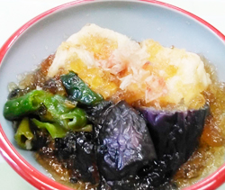

揚げ豆腐と夏野菜の葛煮物
- 調理時間：30分
- （一人当たり）
- カロリー：342kcal
- たんぱく質：7.8g
- 脂質：24.3g
- 炭水化物：19.7g
- 塩分：1.4g


＜2人分＞
- 豆腐
- 200g
- 片栗粉
- 大さじ1
- ナス
- 1本
- 万願寺とうがらし
- 1～2本
- 揚げ油
- 適量
- 水溶き片栗粉
- 小さじ1
(同量の水)
- ・だし汁
- 300ml
- ・みりん
- 大さじ2
- ・薄口醤油
- 小さじ1
- ・食塩
- 小さじ2/3
- 生姜
- １片
- かつおぶし
- 少々
A


- 豆腐は4等分に切り、耐熱皿にキッチンペーパーをしき、豆腐を並べ、600wの電子レンジで2分加熱する。
ナス、万願寺とうがらしは、食べやすい大きさに切る。 - バットに片栗粉を入れ、①の豆腐にまんべんなくまぶす。
鍋に揚げ油を注ぎ、170℃の油で表面がカリっとなるまで揚げる。
ナスと万願寺とうがらしは、素揚げする。 - 小鍋にAの調味料を入れ、火にかけ、ひと煮立ちしたら火をとめ、②の揚げたての材料をいれて味を含ませたら、一旦引き上げる。
- ③を火にかけ、水溶き片栗粉でとろみをつけ、仕上げにショウガの絞り汁を加えて餡をつくる。
器に豆腐、ナス、万願寺とうがらしを盛り付け、餡をかけてかつおぶしをちらして完成。
※冷やしてもおいしくいただけます。
揚げ豆腐と夏野菜の葛煮物
豆腐は水分が90％を占めており、夏の水分補給としても有効。大豆に比べて栄養価は劣りますが、たんぱく質、脂質ともに消化されやすい形になっています。
様々な栄養素を含む豆腐ですが中でも、大豆サポニンは脂肪の燃焼を助けるなど、夏に嬉しい栄養素です。ビタミンAの吸収を促進する働きもあるので、万願寺とうがらしとの食べ合わせはgood。ナスも栄養素の流失を防ぐために油でコーティングして頂くとよいでしょう。